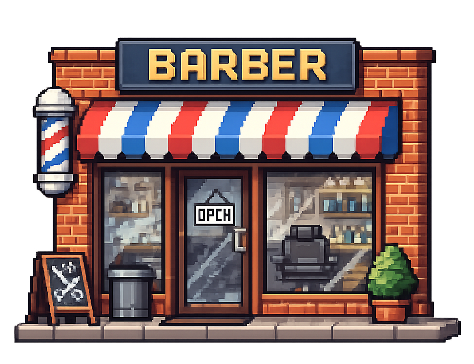

Collect clues, accuse the right money laundering fronts, and keep the heat down.
Players
The journo. That's you.
Roadmen. Don't let them catch you.

Suspicious shop. Accuse when your clue meter is full.
Exposed money laundering front - nice.
A clue. Collect to fill your clue-meter.
How To Play
Move through the streets, avoid roadmen, collect clues, and accuse nearby shops
to expose the three money laundering fronts. You can only accuse a shop when your clue-meter
is full. Wrong accusations boost enemy speed, so pick carefully.
If a roadman catches you, your clue-meter is reset to 0.If there are not enough clues left to expose the remaining bad shops,
you lose.
Each round adds more shops and faster roadmen.
Controls: arrow keys (or WASD) to move, press Space to accuse a shop when you're next to it.
On mobile, tap the top/bottom/left/right of the game to go up down left right. Press the accuse
button below the clue-meter to accuse a shop - it'll become more prominent when you're near a shop.